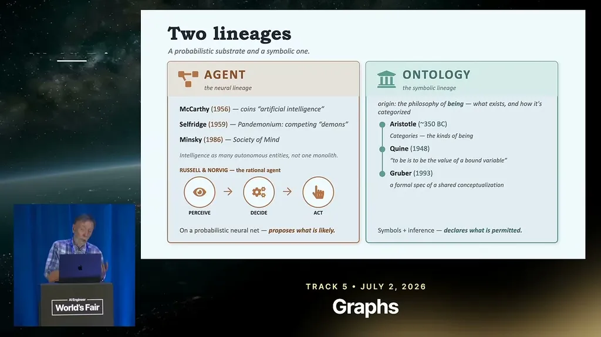
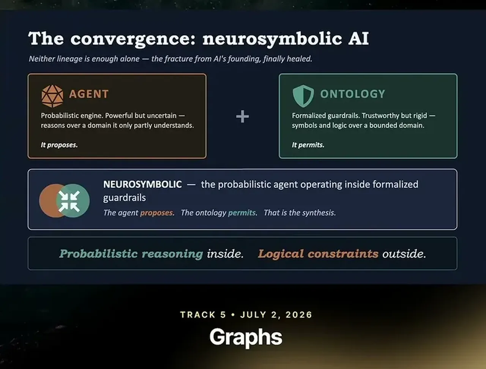
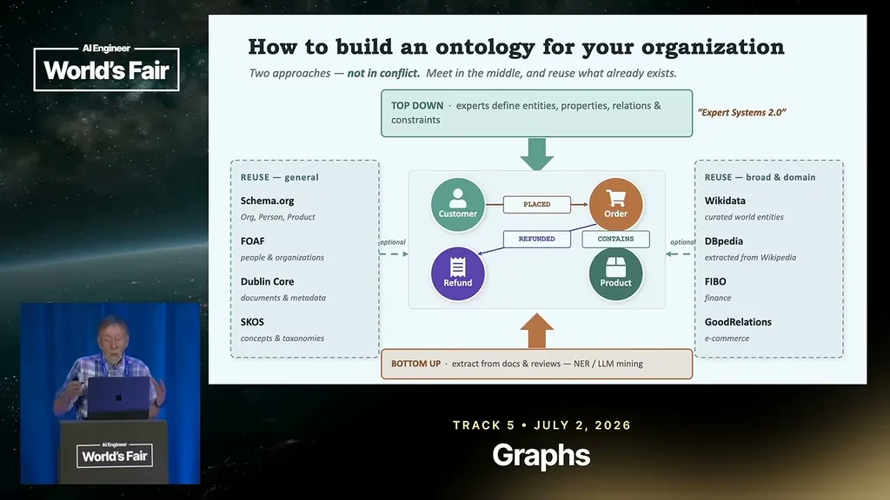
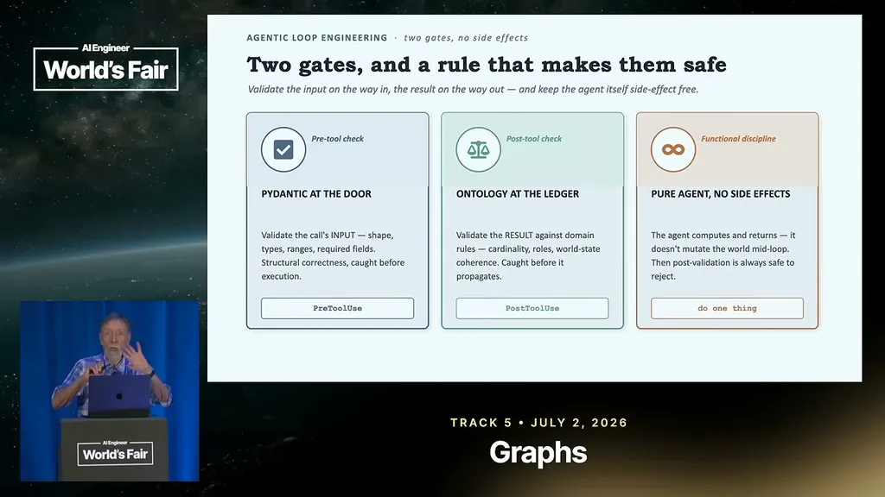

Coyle traces agents back to early AI (McCarthy, Minsky) and ontologies back to Aristotle, through Quine and Gruber's 1993 definition as 'a formal specification of a shared conceptualization.' He argues today's agentic AI represents a convergence of the probabilistic (LLMs) with the formal (ontologies), which he labels neuro-symbolic AI, positioned as a way to keep an inherently hallucination-prone LLM on guardrails.
“It is a a formal specification of a shared conceptualization”
▶ watch at 03:37“neuro-symbolic AI sort of represents a way to keep the LLM on its guardrails”
▶ watch at 04:39
Coyle contrasts graph databases with relational tables, noting relational schemas require restructuring to add a new column while a graph just gets a new attached property or relationship. He also warns against reinventing the wheel: reusable taxonomies like schema.org, FOAF, and Dublin Core already cover many domains (Wikipedia itself runs on the DBpedia ontology).
“relational databases sticking data into tables was too restrictive”
▶ watch at 05:42
Coyle draws a direct historical parallel between today's ontology-plus-agent approach and 1980s symbolic-AI expert systems, which drew heavy investment (including a Japanese national project) but ultimately failed to scale, contributing to an AI winter, while neural networks (proposed in the 1960s) only became viable once GPU hardware caught up.
“they couldn't scale, and then we went into a kind of AI winter”
▶ watch at 06:44Coyle walks through specific RDFS/OWL constructs an ontology can apply on top of graph data: domain/range lets a system infer, e.g., that someone who 'teaches' is a teacher and their object is a student; transitive properties (like ancestor) let inferences chain through multiple hops; functional properties (like 'has father') constrain a relationship to exactly one value, which can catch cases like two names actually referring to one individual.
“if I say teaches has a domain of teacher. That means if I say Bob teaches Scooter in my text, I can infer that Bob is a teacher”
▶ watch at 09:56“If Sue is an ancestor of Mary and Mary is an ancestor of Ann, then Sue is an ancestor of Ann”
▶ watch at 10:28“has father is a functional property. You can only have one father”
▶ watch at 11:28
In a live Claude agent code example, Coyle shows the loop calling a tool, checking the stop reason, and then using an ontology-based validator to judge whether the tool's response is reasonable before proceeding, rather than just accepting whatever the LLM produced. He pairs this with Pydantic for type-checking inputs, summarized as 'Pydantic at the door, ontology at the ledger,' and recommends agents avoid side effects until validation passes.
“Pydantic at the door, ontology at the ledger”
▶ watch at 18:18“you can have a reasoner built on ontology to check keep the LLM on track, have guardrails to keep it honest”
▶ watch at 19:49
Coyle's own worked examples (duplicate refund, misrouted payout, invalid status value) are the strongest part of the pitch because they're concrete failure modes an ontology constraint can catch that plain-English prompting struggles with; the talk doesn't address the engineering cost of building and maintaining the ontology and validator layer itself, which is presumably nontrivial at real system scale (ours).
| Stance | Claim | t |
|---|---|---|
| asserts | An ontology, per Gruber's 1993 definition that Coyle adopts, is a formal specification of a shared conceptualization meant to be given to agents. | 03:37 |
| asserts | Neuro-symbolic AI, the combination of probabilistic LLMs with formal ontologies, functions as a way to keep the LLM on its guardrails. | 04:39 |
| asserts | Graph databases emerged because relational databases, which store data in restrictive tables, force a full schema change to add a new field. | 05:42 |
| warns | 1980s symbolic-AI expert systems drew huge investment but ultimately couldn't scale, contributing to an AI winter. | 06:44 |
| asserts | RDFS domain and range let a system infer roles: if 'teaches' has domain teacher, then stating someone teaches implies they are a teacher. | 09:56 |
| asserts | A transitive property like ancestor lets the system chain inferences: if Sue is Mary's ancestor and Mary is Ann's ancestor, Sue is Ann's ancestor. | 10:28 |
| asserts | A functional property like 'has father' constrains a relationship to a single value, which can be used to catch data errors. | 11:28 |
| recommends | Coyle's summary method is to type-check tool inputs with Pydantic and validate tool outputs against the ontology before an agent acts on them. | 18:18 |
| recommends | Coyle recommends building a reasoner on the ontology to check the LLM's output and keep it honest before proceeding. | 19:49 |
Machine-readable copy embedded in this page (script#ontology) and in the corpus ontology.